Bienvenidos a esta nuestra comunidad
Sobre nosotros
Sobre nosotros
Sobre nosotros
Sobre nosotros
Sobre nosotros
Sobre nosotros
y también:
- Alejo
- Saliam (Nacho)
- Pascual
- Patricio
- Ramón
- Sergio
- Francisco
- ...
Y cada dia más...
Drupal Murcia
¿Qué hacemos aquí? Un poco de historia
¿Qué es la comunidad Drupal?
La comunidad Drupal en el mundo: eventos, iniciativas,...
Asociación Española de Drupal (AED)
La comunidad Drupal en España: eventos, iniciativas,...
Grupos Locales: eventos, iniciativas,...
¿Cómo crear un grupo local?
Pasos previos
Comprobar que no exista ya uno!! groups.drupal.org/spain
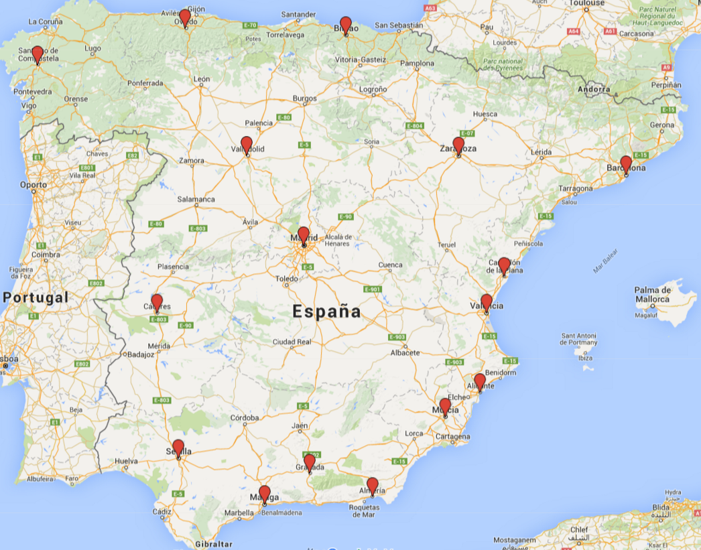Ingredientes
- Al menos 1 o 2 personas (cuantas más mejor).
- Ganas de aprender y compartir conocimientos/experiencia en torno a Drupal.
- Una pizca de iniciativa.
Crear el grupo
Notificar la creación del grupo a la AED.
Darle visibilidad: en drupal.org, IRC, Redes sociales, Meetup, eventos afines, ...
Publicitarlo, para buscar más drupaleros por la zona.
Ya tenemos grupo ¿Ahora qué?
Comunicación
Definir medios de contacto y de organización:
- IRC: para conectarse y chatear en todo momento.
- Hangout: para videollamadas, reuniones en grupo.
- Meetup: para planificación de quedadas.
- Listas de correo: para distribución de mensajes en el grupo.
- WhatsApp / Telegram: para contacto en el momento.
Organizar eventos/actividades
- Drupal & Beers
- Charlas o presentaciones temáticas
- Debates/mesas redondas
- Sprints
- ...
Relacionarse con otros grupos
Comunidades afines: Betabeers, Php, Symphony, desarrollo web ...
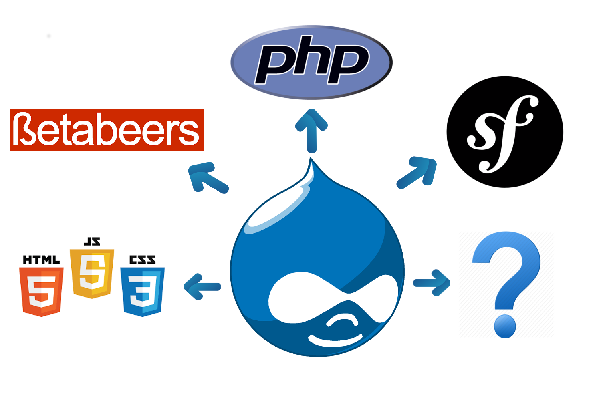Cómo contribuir con la comunidad
Diferentes maneras:
- Intégrate en la comunidad: empezando por tu grupo local!!
- Hazte socio de la AED.
- Contribuye/revisa código.
- Da soporte a otros.
- Asiste a eventos.
- Ayuda a organizar eventos: DrupalCamp, DrupalDay.
- Dando publicidad.
Qué hacer para mantener un grupo local
Mantener viva la llama
Dificultades y cómo solventarlas
Es importante que haya constancia a la hora de realizar quedadas o eventos y mantener la actividad del grupo. Las quedadas pueden ser más formales o menos.
- Es dificil coincidir todos en las mismas fechas, horas e incluso el mismo sitio.
- Planificar conjuntamente y con antelación un calendario de fechas para las actividades.
- Intentar respetar las fechas propuestas.
Dificultades y cómo solventarlas
- Localizar un buen lugar para quedar.
- Tener varios sitios posibles diferentes.
- Si se organizan presentaciones, será necesario disponer de proyector.
- Poder tomar algo, preferiblemente tras la quedada.
- Tratar temas de interés para todos.
- Decidir entre todos los componentes que temas son más interesantes.
- Tratar de aprender todos de todos.
Y sobre todo ...
¡Hay que disfrutar y divertirse Drupaleando!

Cómo montar un DrupalDay desde 0.
Echarle huevos, pijo
Antes de nada... deberías tener en cuenta que necesitas:
- Ganas
- Tener un equipo detrás (a no ser que seas del país vasco como keopx :D)
- Una idea de sitio(s) para el evento
Presentar candidatura
- Contactar con el grupo de trabajo de eventos de la AED
- Comentar tus ideas y preguntar todas las dudas que tengas
- La AED te indicará los próximos pasos a seguir para presentar la candidatura
- En caso de que haya varias candidaturas la asociación analizará cada una de ellas y comunicarán la sede definitiva
¡Enhorabuena, vais a organizar un DrupalDay!
Herramientas útiles de comunicación y organización
- Un gestor de tareas sencillo: Trello, Kanbanflow, etc.
- Hangout o Skype para mantener reuniones frecuentes
- Grupo de WhatsApp o Telegram para notificaciones importantes (próxima reunión, asuntos bloqueantes, logros importantes)
- Chat IRC para comunicarte con la AED, la comunidad española o tu grupo organizador local
Sede
Sede
- Universidades, salas de conferencias/congresos, etc.
- 1 o 2 sálas dependiendo de la previsión de asistentes y el número de sesiones
- Wifi, eterno enemigo en este tipo de eventos
- Proyectores o tener familiares cerca que tengan
- Accesibilidad, buena comunicación de transporte público y aparcamiento
- Zonas para comer cercanas
Sesiones
Sesiones
- Define las temáticas más importantes para tu evento
- Call for papers y/o modo recruiter
- Tipos de sesiones: charlas, talleres, mesa redonda, BOF, sprints, etc.
Web
En nuestro caso utilizamos como base el proyecto DrupalDay para agilizar el proceso. Gracias a keopx, ckrina, karmen, David Hernandez y drupal-murcia por colaborar en él.
Necesitamos:
- Un logo
- Caracterizar la web con los colores de tu ciudad/región
- Fotos de la ciudad, lugar del evento, gastronomía local
- Introducir noticias y novedades
- Diferentes secciones
Sitios de fiesta
Busca sitios céntricos donde quepan tus drupaleros y si es posible conseguir precios por grupo :P
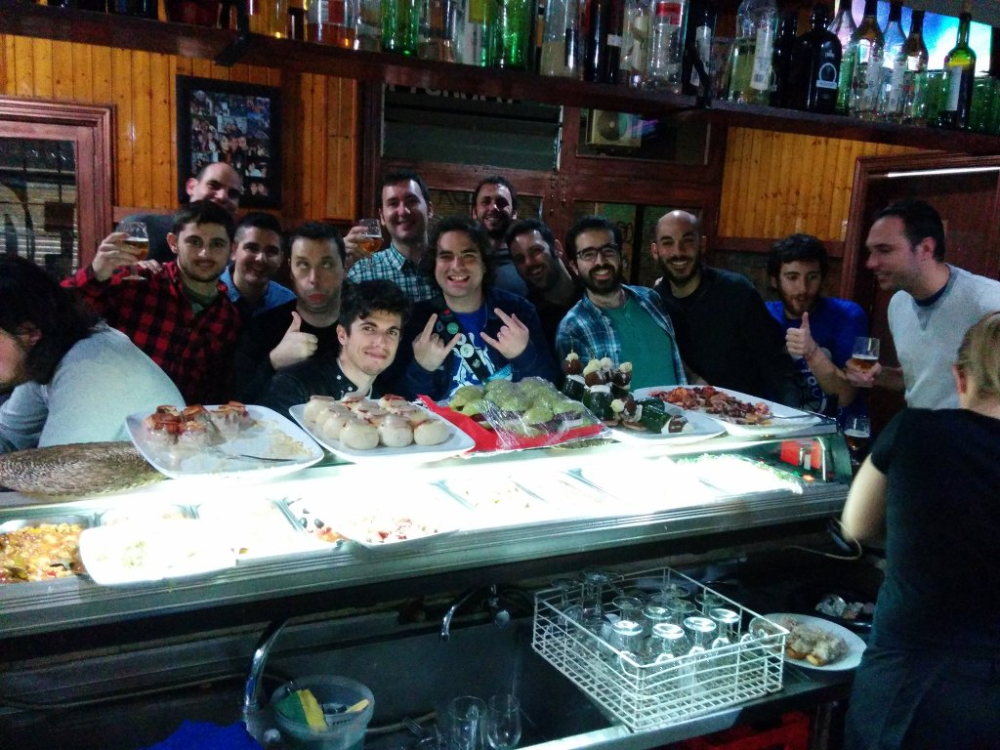Comidas y cenas
- Necesitarás sitios cercanos para comer el día de las sesiones
- Las cenas recomendable que sean en lugares céntricos cerca de las zonas de fiesta
Alojamiento
Recopila hoteles/hostales/albergues cercanos a la sede del evento y a las zonas de fiesta.
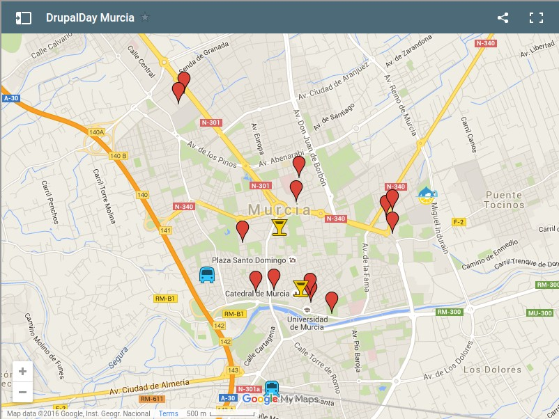Transporte
- Busca las mejores combinaciones para llegar a tu ciudad: avión, coche, tren, autobus, etc
- Consulta la posibilidad de conseguir descuentos de congreso
- Información y datos de contacto de taxis, metro, tranvía, autobus para llegar a la sede del evento y a las zonas de fiesta
Darle publicidad al evento (spammear al máximo)
- Redes Sociales: Usar la cuenta de @drupalday y la cuenta del grupo local
- Universidades: Contacta con las universidades y centros de formación profesional de tu ciudad
- Aprovecha la existencia de otros grupos locales relacionados: betabeers, grupo usuarios linux, software craftsmanship, etc.
- La Asociación Española de Drupal también te ayudará en esto :)
Diseño
 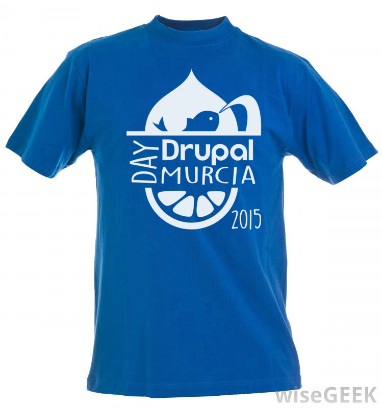
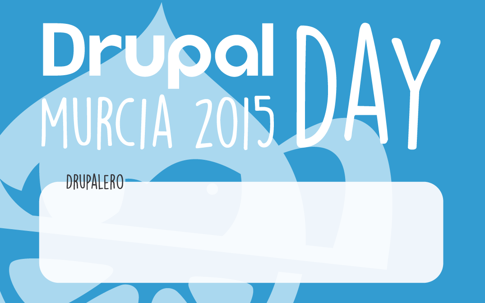
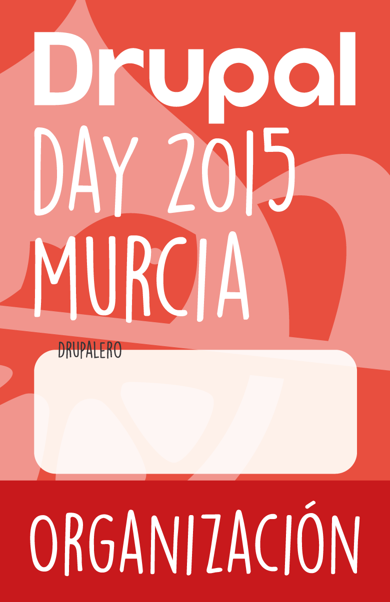
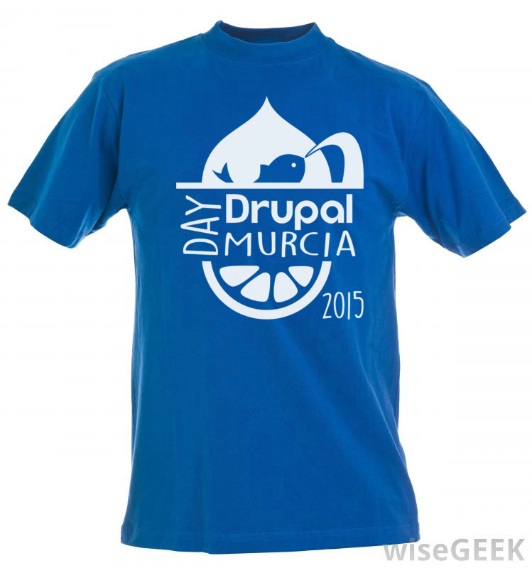
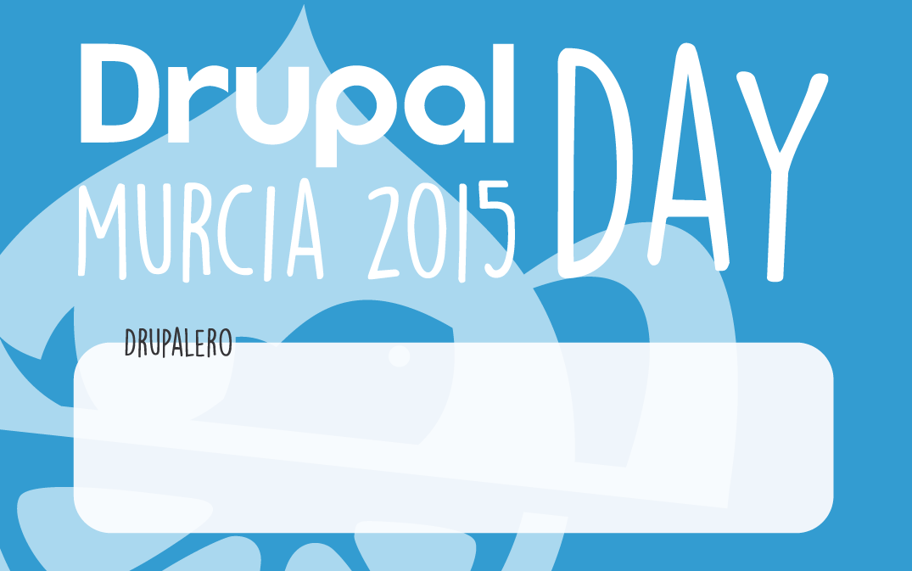
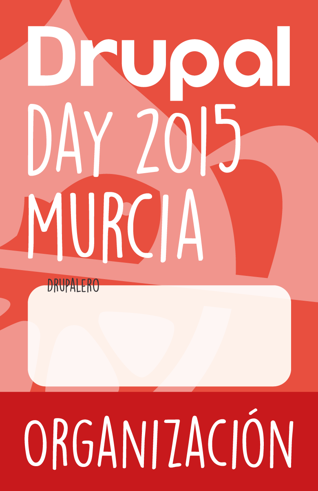
Disfrutar del evento
Los DrupalDay son únicos
Estamos en contacto :P
Dónde informarme
- groups.drupal.org
- Newsletter drupal.org
- Twitter: @drupal, @drupalAED,...
 Meetup
Meetup
|
#drupal-es en irc.freenode.org |
| Drupalize.me | Drupodcast |
| 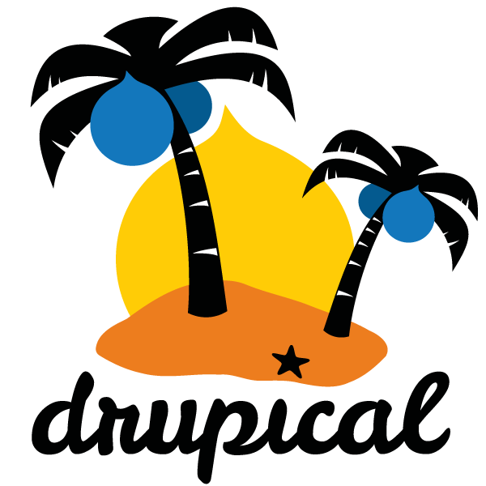 Drupical |
Preguntas
¡¡Gracias!!
Reveal.js
The HTML Presentation Framework
Created by Hakim El Hattab / @hakimel
Hello There
reveal.js enables you to create beautiful interactive slide decks using HTML. This presentation will show you examples of what it can do.
Vertical Slides
Slides can be nested inside of each other.
Use the Space key to navigate through all slides.
Basement Level 1
Nested slides are useful for adding additional detail underneath a high level horizontal slide.
Basement Level 2
That's it, time to go back up.
Slides
Not a coder? Not a problem. There's a fully-featured visual editor for authoring these, try it out at http://slides.com.
Point of View
Press ESC to enter the slide overview.
Hold down alt and click on any element to zoom in on it using zoom.js. Alt + click anywhere to zoom back out.
Touch Optimized
Presentations look great on touch devices, like mobile phones and tablets. Simply swipe through your slides.
Fragments
Hit the next arrow...
... to step through ...
... a fragmented slide.
Fragment Styles
There's different types of fragments, like:
grow
shrink
fade-out
current-visible
highlight-red
highlight-blue
Transition Styles
You can select from different transitions, like:
None -
Fade -
Slide -
Convex -
Concave -
Zoom
Themes
reveal.js comes with a few themes built in:
Black
(default) -
White
-
League
-
Sky
-
Beige
-
Simple
Serif
-
Blood
-
Night
-
Moon
-
Solarized
Slide Backgrounds
Set data-background="#dddddd" on a slide to change the background color. All CSS color
formats are supported.
Image Backgrounds
<section data-background="image.png">Tiled Backgrounds
<section data-background="image.png"
data-background-repeat="repeat" data-background-size="100px">Video Backgrounds
<section
data-background-video="video.mp4,video.webm">... and GIFs!
Background Transitions
Different background transitions are available via the backgroundTransition option. This one's called "zoom".
Reveal.configure({ backgroundTransition: 'zoom' })Background Transitions
You can override background transitions per-slide.
<section
data-background-transition="zoom">Pretty Code
function linkify( selector ) {
if( supports3DTransforms ) {
var nodes = document.querySelectorAll( selector );
for( var i = 0, len = nodes.length; i < len; i++ ) {
var node = nodes[i];
if( !node.className ) {
node.className += ' roll';
}
}
}
}
Code syntax highlighting courtesy of highlight.js.
Marvelous List
- No order here
- Or here
- Or here
- Or here
Fantastic Ordered List
- One is smaller than...
- Two is smaller than...
- Three!
Tabular Tables
| Item | Value | Quantity |
|---|---|---|
| Apples | $1 | 7 |
| Lemonade | $2 | 18 |
| Bread | $3 | 2 |
Clever Quotes
These guys come in two forms, inline:
“The nice thing about standards is that there are so many to choose from”
and block:
“For years there has been a theory that millions of monkeys typing at random on millions of typewriters would reproduce the entire works of Shakespeare. The Internet has proven this theory to be untrue.”
Intergalactic Interconnections
You can link between slides internally, like this.
Speaker View
There's a speaker view. It includes a timer, preview of the upcoming slide as well as your speaker notes.
Press the S key to try it out.
Export to PDF
Presentations can be exported to PDF, here's an example:
Global State
Set data-state="something" on a slide and "something"
will be added as a class to the document element when the slide is open. This lets you
apply broader style changes, like switching the page background.
State Events
Additionally custom events can be triggered on a per slide basis by binding to the
data-state name.
Reveal.addEventListener( 'customevent', function() {
console.log( '"customevent" has fired' );
} );
Take a Moment
Press B or . on your keyboard to pause the presentation. This is helpful when you're on stage and want to take distracting slides off the screen.
Much more
- Right-to-left support
- Extensive JavaScript API
- Auto-progression
- Parallax backgrounds
- Custom keyboard bindings